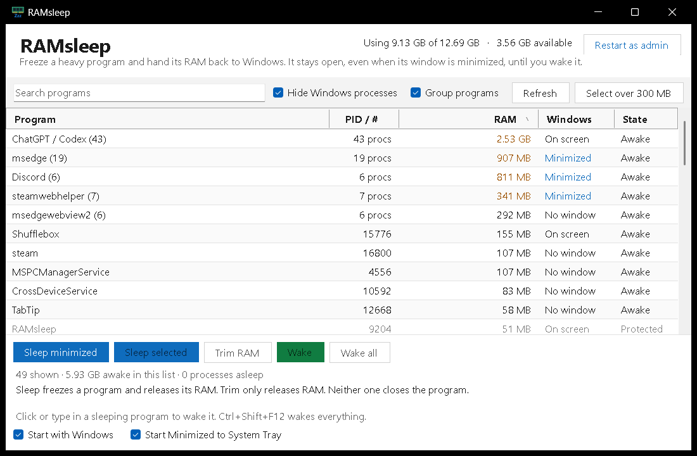

Free up RAM without closing your apps.
RAMsleep freezes heavy programs and trims their memory while leaving them open. Wake them when you return and pick up where you left off.

A simple way to pause the heavy stuff
Sleep without closing
Freeze a selected app or heavy minimized programs. Their windows stay open until you wake them.
See programs together
Group an app with its helper processes to see and act on the whole program.
Wake when you return
Interact with a sleeping program to wake it, or use Ctrl+Shift+F12 to wake everything RAMsleep put to sleep.
Know before you sleep
RAMsleep is for 64-bit Windows and requires .NET Framework 4.x. Save your work first: sleeping a program pauses its background activity. “Trim RAM” releases memory without freezing it; a busy program may take memory back. Some programs require administrator access.
Ready to make room?
Purchase once on itch.io and download RAMsleep for Windows.